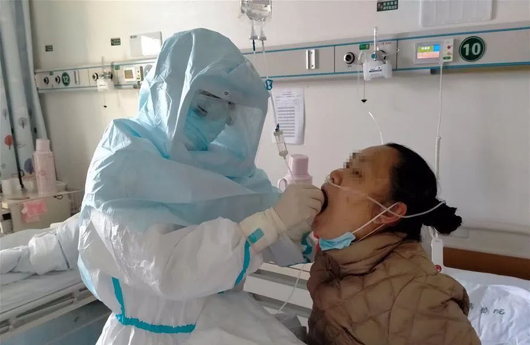
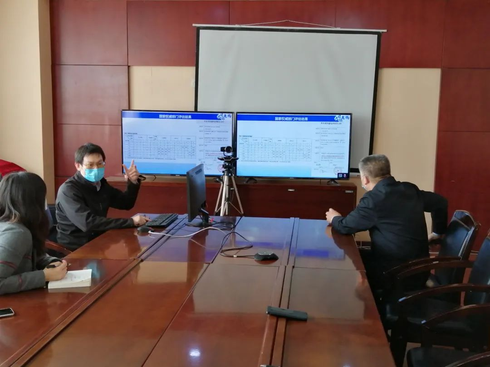
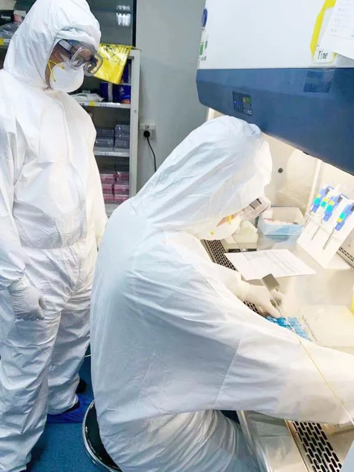

冠状病毒的暴发并非偶然？研究显示：病毒“溢出”现象或已悄然发生多年
原文链接 备份链接 这些研究表明，野生动物源冠状病毒是一种“明确和当前的危险”，许多冠状病毒具有大流行的潜力，而当我们毫不顾忌地去直接或间接接触，可能就是下一次病毒大暴发的导火索。 本文 5867字，阅读全文约10分钟 图/pixabay …
记者/ 张蕊实习记者林亦桥
编辑/石爱华 宋建华

在进行核酸检测的工作人员
新冠疫情后期，“治愈后再次复阳”、“连续数次检测为阴，最后被确诊”、“无症状感染”的病例报告开始越来越多地出现，一度让新冠被称为“最狡猾的病毒”。
**华大集团传染病首席科学家陈唯军在接受北青深一度的采访时表示，目前还没有科学依据显示“治愈患者会再感染”，“复阳”更可能是病毒检测边界范围内出现的一种情况。
**
陈唯军参与了此次新冠病毒检测产品的研究工作。他认为，核酸检测连续几次都是阴，但最后仍然被确诊“更多的可能是哪个操作环节出了问题。”陈唯军透露，因为咽拭子病毒含量偏低，会有大概10%的漏检率。
由于尚未发现新冠病毒的中间宿主，陈唯军认为，“新冠”成为季节性流行病的几率不大。流感之所以会流行，是因为大量的鸟类会携带流感病毒，猪也会携带，人类和流感病毒宿主之间有大量的接触机会。而新冠病毒目前还未找到中间宿主，没找到，就意味着中间宿主可能是野生动物，我们接触野生动物的机会不多，被传染的几率就小，流行的几率也会小。

陈唯军在分享研究成果

复阳不是再感染
深一度：核酸检测到底是什么？
陈唯军：核酸检测是一大类检测方法。需要检测某种病毒，就需要试剂盒中包含这种病毒的检测成分，比如，“新冠”的核酸检测，就只能检测出新冠病毒。
深一度：有案例显示，即使是使用了核酸检测试剂盒，早期还是有大量病人无法确诊，这是什么原因？
陈唯军：原因有很多，新冠肺炎本身就爆发于流感季节。很多呼吸道感染症状并非新冠感染引起的，患者只做”新冠“检测，结果显示阴性，在没做其他病原体的鉴别诊断情况下，肯定无法确诊。我们初步发现，在进行了新冠核酸检测的人群中，高达30%的病人实际上是其他病原感染。
另外，还有一个检测能力问题，比如样本能不能送到检测机构去做检测等。早期武汉的检测能力其实很不够，试剂盒的产能也是后期才提升的，后来大量资源供应到了武汉，情况才好转。
深一度：一些病人治愈出院，几天后核酸检测又变成阳性，最长的达到31天复阳，这是没有被治愈还是再次被感染？
陈唯军：感染新冠病毒之后，最佳检测点在肺部，因为病程发展，很快就会到达下呼吸道。这就说明肺部灌洗液和痰液中的病毒含量要比咽拭子中的多。我们的研究结果也表明，新冠患者痰液中病毒的含量大概是咽拭子病毒含量的100-1000倍。任何一种检测方法都有极限，一些治愈病人的咽拭子病毒含量处于极限边缘，检测结果就不稳定。可能今天阴性、明天阳性，目前没有证据显示“复阳是再感染”，而很可能是病毒体还没有完全被清除，还有残留在体内，但存量很低。
我们测试了一些患者复阳的数据，发现咽拭子的检测值就在灵敏度的局限范围内，所以这应该不是再感染。现在的证据来看，除了免疫缺陷人群，新冠感染治愈后的免疫能力还是很好的，应该不会再感染。既然已经治好了，那就意味着对这种病毒免疫了，就像打了疫苗，应该不会再感染。
深一度：出现复阳，是不是意味着我们当时的出院标准制定的有些低？
陈唯军：不完全是。最初的出院标准是连续两次咽拭子检测为阴。就是第一天检测完成后，第二天再检测，两次检测为阴就可以出院。后来改成第一天检测完成后，间隔一天，第三天再检测，这样两次检测为阴才可以出院。之所以修改两次检测的间隔时间，是因为第一种检测方式可能会带来漏检。
但其实，所有检测方法就会出现漏检，加上早期有些试剂盒的灵敏度偏低（比如1000-2000拷贝/ml，那么如果咽拭子的病毒是500个拷贝/ml，就可能会检测不到病毒，因为处于不稳定区。所以和试剂盒的灵敏度有关，也和病毒在体内的浓度有关。

医务人员取咽拭子进行核酸检测（图片来自新华网）
后遗症患者不会太多
深一度：有患者核酸检测是阴，但CT检测肺部却有病变,这是为什么？这是否说明CT检测比核酸检测更准确？
陈唯军：临床CT检测出来的结果很难区分到底是哪一种肺部感染，因为SARS、新冠病毒、流感，它们的症状可能都是肺部感染，那如何确定是新冠呢？当时使用CT检测，是因为在特定环境下，“新冠”就在那里流行，理论上，这个病就占大多数。早期大家不认识新冠，导致检测灵敏度偏低，有一定的漏检率，医生也没办法鉴别，所以才推荐了临床CT的检测模式。不过CT检测几天后就取消了，这是因为这种检测方式会带来大量误诊，由流感、腺病毒等病毒引起的肺炎，都会被当成“新冠“。
因为咽拭子病毒含量偏低，会有大概10%的漏检率。如果肺部有感染，但肺部灌洗液、痰液中的核酸检测为阴性，那基本上排除是新冠病毒引起的。
其实，有更灵敏的检测方式，比如测序，除了新冠病毒，其他病原体也能检测出来，这就可以直接判断是哪种病毒。但因为成本太高，只适合重症感染人群的鉴别诊断，没办法广泛应用在所有人的身上。这次武汉有很多病人的CT影像显示感染，但在医院检测核酸又是阴性，使用了测序检测试剂盒后，鉴别出了包括流感、腺病毒等其它病原体形成的肺部感染。
深一度：新冠肺炎和此前的一些流行病有什么相同或者不同？
陈唯军：“新冠“和SARS相比，有很多相似之处：同样是冠状病毒，也引起了同样的感染，患者都有呼吸道和消化道症状。不过SARS的重症病人比较多，新冠肺炎传播力似乎更强。
深一度：新冠患者治愈后，是否也会产生后遗症呢？
陈唯军：这涉及到医疗技术的提高。2003年的时候，SARS搞了3个月还没搞清楚是什么，现在”新冠“一个星期就搞清楚是什么了。
当年的治疗手段不如现在先进，当时控制SARS病人危重化的难度大，导致了大量病人转成危重患者，这也是人们感觉SARS比新冠要严重的原因之一。
过去，危重病人可能要上糖皮质激素来冲击，但上了激素能够活过来的病人就产生了后遗症，股骨头坏死就是其中之一。
如今，在新冠肺炎的治疗上，是非常慎用激素治疗的，不到万不得已不准用激素，这是在所有的治疗方案中强调的，这就是技术进步的表现，也是当年SARS治疗留下来的经验。医疗技术和科技的进步会使得临床治疗有更多的方案，减少或谨慎使用激素治疗病人，所以这次有后遗症的患者不会太多。

陈唯军在吉林省疾控中心和当地卫健委交流工作
无症状患者不会成为超级传播者
深一度：此次新冠疫情中无症状者会有多少？
陈唯军：对于新冠病毒来说，中国CDC给出的数据是，密接人群有1.2%的隐形感染和发病。但试剂盒灵敏度有限，低拷贝的时候可能没检测到，所以应该至少会大于1.2%的隐形感染，当然具体数据需要对密接人群做抗体测试才可以确定。
深一度：因为没有症状，那么无症状感染要如何鉴别？
陈唯军：无症状感染没办法鉴别，从流行病的角度来说，就没办法隔离。现在是通过“密接”来排除，只要接触过新冠患者，就隔离，那么无症状感染者就会在里面。如果没有接触病毒，肯定不会感染，目前就是通过这样的方式来鉴别。但是在日常生活中，确实是很难鉴别。
任何流行病都有无症状感染者。新冠在武汉的致死率约5%，其他地区都要低于这个数字，从数据来看，新冠的危害性并没有想象中的那么大。现在的初步数据显示应该会有隐形感染者。在感染者中，有发病的，有轻症的，也有不发病的。
深一度：如果无症状感染者最终没有被鉴别出来，会不会成为超级传播者？
陈唯军：大家都在说超级传播者，所谓超级传播者有两个概念。一是传了很多人，形成严重的后果。一名超级传播者首先应该会携带较高含量的病毒，如果病毒携带量很低，无法有效传染，那肯定也不会形成传播。二是超级传播者一定是一名非常活跃的社会活动者，如果不活动，天天在家里，那也不可能成为超级传播者。
从理论上来说，任何一个社会活动活跃的感染者都有可能成为超级传播者，但从我们的监测来看，无症状感染者相对于有发热症状的感染者来说，大部分携带的病毒含量不高，这意味着他传播能力也相对要弱。更多的可能是，处于潜伏期的病人，具有较高病毒含量，更有可能成为超级传播者。
深一度：不少患者治愈后，都去医院捐赠了血浆，血浆疗法是否可靠？
陈唯军：从理论来讲，这个治疗方法是没问题的。因为是通过人体的免疫力来中和病毒，但是打的抗体要有效价（注：抗体效价是生物学名词，是用抗体的物理状态及其在体内的滞留时间，以其与抗原反应的多少来表示其免疫效果的一种反应），就是值和量的关系。
比如一块磁铁，可以吸一公斤的铁，结果有两公斤的铁，那肯定吸不上来。拿抗体来说也是这样，体内病毒有200个，打抗体中和了100个，那还有100个没中和掉，这100个就还得治疗，这时候效果肯定不好。但如果抗体效价很高，能中和500个病毒，患者体内只有200个病毒，那肯定就能治好了。
早期的时候并没有规范的血浆使用量是多少，只要是康复病人的血浆就打进去了，有些就没有达到效价量。当年SARS也使用过这个方法，同样是有效果的，前提条件是量也必须达到。

检测人员在进行核酸检测
“新冠”大概率不会成为流行性疾病
深一度：有一种说法是，新冠可能会成为季节性的流行性疾病，每年都会复发，是否存在这种可能性呢？
陈唯军：流感就是季节性的，每年都有。最初是2009年的猪流感，从北美传过来的时候，大家也很恐慌，但现在已经变成了每年都会有的正常感染。但新冠不一定，因为它的很多方面和SARS相似，当年SARS就来无影去无踪，新冠最大的可能性也是这样，当然，也不排除新冠会变成季节性的流行病。
流感总会出现，是因为大量的鸟类可能会携带流感病毒，猪当中可能也会携带流感病毒，这就是说人类和流感病毒的储存宿主或者中间宿主有大量接触的机会，接触的机会越多，被传染的可能性就越大。但对于“新冠”来说，截止目前，还未找到中间宿主。没找到，就意味着中间宿主可能是野生动物，我们接触野生动物的机会并不会太多，接触少，被传染的几率就小，流行的几率也会小。
从这个角度来说，如果是罕见的野生动物作为储存宿主或者中间宿主，那新冠很可能就会和SARS一样，最终的结果就很可能不会形成季节性流行。
现在有些研究已经表明，病人体内病毒清除时间长，交叉感染更多的是在人群内形成的，如果这个病毒在人群中持续存在，那也有可能形成短时期的季节流行。
深一度：如果新冠成为季节性的流行病，那么它的传染能力会不会也随之下降？
陈唯军：传播能力应该不会有很大的下降，一是病毒变异需要过程，不会这么快就发生变化；二是即使变异，从进化论的角度来讲，病毒也应该会是变得更适合感染。
目前的资料来看，新冠的传播能力已经足够高了，大约是3%，但死亡率会越来越低，因为大家都认识它了。早期死亡率之所以高，是因为大家都不认识它，心里有恐慌，治疗经验也少一些。在治疗过程中，心理因素很重要，越怕越不好治。
如今新冠的治疗方案越来越成熟。从数据来看，新冠患者中死亡的大多数都是老年人和有基础疾病的人群，其实有些人并不是新冠致死的，我们监测到很多重症病人都存在继发感染，比如真菌、细菌等感染都会引起人体免疫力的严重损伤，当免疫力无法抑制细菌的时候，感染就控制不住了。
另外，我们的研究也表明，针对继发感染的治疗控制，也能有效改善预后，这也说明对于危重病人的继发感染的监测非常重要，现在我们也有了测序试剂盒这样的工具，一定要用好它，促进预后。
前段时间，大家看到“痰”的问题，现在新冠病人都会用吸痰机去吸痰，避免气道堵塞，这也在一定程度上降低了死亡率。新冠是否能够被治愈，和人体自身的免疫力确实有很大的关系，免疫力好的感染几率小，治愈的几率相对较高。
【反侵权公告】本文由北京青年报在今日头条首发，未经授权，不得转载。


最后的告别 | 深度报道
警务值班室内的重伤案：护母冲动下的正当防卫之辩 | 深度报道

3例病理解剖初步诊断完成 死者肺部有黏液性分泌物| 深度报道

原文链接 备份链接 这些研究表明，野生动物源冠状病毒是一种“明确和当前的危险”，许多冠状病毒具有大流行的潜力，而当我们毫不顾忌地去直接或间接接触，可能就是下一次病毒大暴发的导火索。 本文 5867字，阅读全文约10分钟 图/pixabay …
原文链接 备份链接 关于新冠病毒溯源，至今仍有许多疑问，比如它以何种方式从动物进入人体，以及未来是否还会卷土重来？虽然答案多是推测，但在一些研究蝙蝠的科学家看来，冠状病毒的暴发却并非偶然。 在中国新冠疫情暴发初期，武汉病毒研究所石正丽团队 …
原文链接 备份链接 出院并不等于彻底痊愈 2月27日，已经出院19天的徐州居民王先生核酸检测呈阳性，被再次收入定点医院医学观察。 王先生在2月9日出院，经过14天隔离点观察后回家。回家后三天，王先生在新闻上看到部分康复者复检呈阳性，主 …
原文链接 备份链接 一则好消息：儿童或在新冠疫情中幸免于难。迄今尚未看到儿童因新冠病毒感染而死亡的报道。 据中国疾控中心 2 月 17 日数据，在确诊的 44672 例患者中有 0.9% 为 9 岁以下婴幼儿，约为 400 例；19 岁 …
原文链接 备份链接 根据抗体“单阳”报告，一些医护人员虽能确定自己经感染新冠病毒，却有可能因不符合确诊标准，而被工伤保险认定、诸多补偿资助拒之门外 本文 3522字，阅读全文约5分钟 文 | 《财经》实习记者 朱贺 编辑 | …